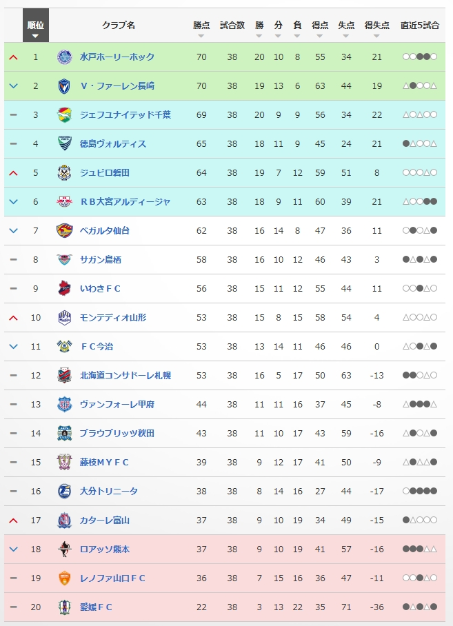

2025シーズンJ2最終節
はじめまして、あゆです。
本日11月29日はJ2第38節、最終戦でした。
ヴェルディは試合が無かったので、私は自宅でまったりとDAZNを視聴。魔境J2の最終節、これは面白くなるだろうと思っていました。
最終的な順位はこちら。

まずは、水戸ホーリーホックの優勝、おめでとうございます！
来季はヴェルディと対戦することになるので、注目ですね。私は水戸に行ったことがないので、遠征候補としてチェックしておこうかな。
茨城県は、霞ケ浦とか牛久大仏を見に行ったことはあるんですけどね。
水戸はとにかくシュートが上手い印象があります。たとえJ2だろうと優勝チームは間違いなく馬力がありますからね。
そして、2位フィニッシュで自動昇格を決めたVファーレン長崎。私は度々長崎の試合を観ていましたが、長崎も良いチームですよね~。
長崎はなんといってもスタジアム。jリーグではここ最近で一番新しいスタジアムなのでは??雰囲気もよさそうだし、まじで行ってみたいですね。
来年はヴェルディとアツい試合、お願いします！
プレーオフ圏に入ったのは「ジェフ千葉」「徳島」「磐田」「大宮」の4チーム。どこもJ1経験があり、
この中から1チームが昇格を手にするレギュレーションになります。
千葉は長らくJ2で苦しんでいて、今年こそはと不屈の精神をもってプレーしてますね。J2の番人と言われた水戸も来季からは
J1ですし、千葉も昇格できればまた面白くなってくるかなと思います。
徳島は堅実な守備固め、前線の決定力が本当にすごいな~と思います。
コツコツとタスクをこなし、冷静ながらもサポーターのために心を熱くしてくれる選手たちは魅力的です。
個人的には徳島のAMOREというチャントが好きです。あと、命果てるまでというやつも好きです。
磐田は1年でJ1に戻ってこれるかという戦いですね。サッカーに詳しくない人でも知っていたりしますから、名門クラブとして頑張ってほしいです。
日本代表でプレーしていたGK川島選手を見てみたいので、来季はヴェルディと対戦してほしい気持ちがあります!
大宮もJ1歴の長い名門クラブなのではないでしょうか。大宮ホームのNACK5スタジアムは私も行ったことがあります!
ピッチとの距離が近く、とっても良いスタジアムでした。ネットでも愛されるケンユー（杉本選手）もいますからね!
仙台はホームでいわきに敗戦。鳥栖戦の数的不利２点差大逆転の劇的試合を演出したり、今季も大きな盛り上がりを見せていましたが、
この最終戦はもったいなかった、、、、
残留争いは、富山が絶体絶命の状態から3連勝。本日秋田との試合では、4-1で3点差勝利。熊本に得失点差で上回り、奇跡の残留を果たしました。
いやーこれは本当にすごい、、、。後半ATの超絶ゴラッソもすごかったです。ですが、次節には降格の可能性がある状態がずっと続いていた中で、耐え忍んできた
チームのメンタルを本当に褒めたい。よくがんばった♥
富山が逆転で残留を決めたということは、逆転されたクラブもあるわけで、熊本はまさかのJ3降格。
正直私はロアッソ落ちると思ってなかった、、、これはつらい、、、。
そんなわけで、激動の2025 J2リーグの戦いは幕を閉じました。あとはプレーオフのみ。
昇格の可能性を残された4チームが、最後の力を振り絞って死闘に挑みます。乞うご期待しましょう!